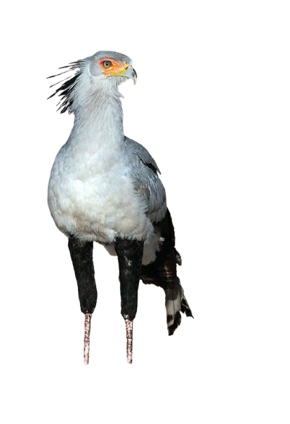

הלבלר מצוי בשטחי יבשת אפריקה, דרומית למדבר סהרה. הוא נמצא בעיקר בשטחי עשב פתוחים אך גם בכל קרקע שאינה סבוכה מצמחייה, אפילו אדמות חקלאיות. את עיקר תנועתו הוא עושה בהליכה ובריצה מהירה, ובשיטה זו הוא עובר ביום 30 ק"מ לפחות. הלבלר ניזון ממגוון בעלי חיים אותם הוא מוצא וצד על הקרקע: יונקים קטנים, מכרסמים, לטאות, נחשים, צבים, חרקים, ציפורים וביצים. את הטרף הורג הלבלר בעזרת כפות רגליו החזקות, ובעיקר בעזרת הטופר החיצוני שאותו מכוון הלבלר אל חיבורי הגולגולת. הלבלר פורש את כנפיו וציצית ראשו עומדת, בשעה שהוא מקפץ במהירות על הטרף ונועץ בו את טפריו. אם הטרף גדול מכדי להיבלע בשלמות, הלבלר מקפץ עליו קדימה ואחורה עד אשר הוא נקרע לחתיכות הניתנות לבליעה. נוצות חזהו אפורות וקצוות כנפיו שחורות. סביב עיניו כתם כתום-אדום. משערים כי צבע בוהק זה מטעה מיני נחשים מסוימים, אותם תוקף הלבלר. ידוע שעופות דורסים רבים, הניזונים מנחשים הם בעלי צבעים דומים באזור הפנים. ללבלר שיטת הטעיה נוספת עבור נחשים. בהתקרבו לנחש הוא מצמיד את זנבו הארוך לאדמה. הנחש התוקף, שאינו מבדיל בין רגלו של העוף לבין זנבו, מבזבז את ארסו על נוצות הזנב החלולות שאינן מוליכות ארס.  הלבלר נשאר עם בת זוגו לכל החיים, אך אורח חייו אינו חברתי ובני הזוג שומרים מרחק אחד מהשני ולעיתים רחוקות נצפים ביחד, למעט בתקופת החיזור ובתקופת גידול הצאצאים. על אף שהותו הרבה על הקרקע, הלבלר מיטיב לעוף ומעופו נאה ביותר. בעת סכנה הוא מזנק במהרה באוויר ומעופף הרחק מהסכנה. הוא ישן ומקנן בעצים רחבים, לרוב עצי שיטה. קינו עשוי להגיע לשני מטרים בקוטרו, אך מוטלות בו 2 עד 3 ביצים בלבד. הנקבה דוגרת על הביצים במשך 45 ימים. הגוזלים נשארים בקן כ-3 חודשים, ועוזבים את הקן כשבוע לאחר שלומדים לעוף. הלבלר שקט בדרך כלל ומשמיע קולות המזכירים קרקור לעיתים נדירות, בעיקר בתקופת החיזור. הגוזלים מטים את ראשם לאחור כאשר הם משמיעים את צווחותיהם, בדומה למיני עיטים ועיטמים מסוימים. הלבלר הוא העוף הלאומי של סודאן.